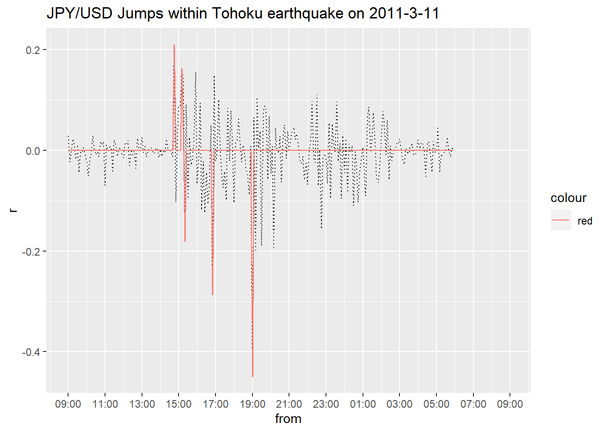

Rcpp to speed up data handling (using Tick data processing as an example)
0. What I want to do
As mentioned above, what I will show you this time is the pre-processing (and analysis) of currency tick data. I won’t go into details since my main focus is to improve efficiency of analysis using Rcpp, but I will give you a rough idea of what I want to do.
What we want to do is to detect jumps in the 5-minute returns of the JPY/USD rate. A jump here is a sudden rise (or fall) in the exchange rate compared to the previous point. During the day, exchange rates move in small increments, but when there is an event, they rise (or fall) significantly. It is very interesting to see what kind of event causes a jump. In order to verify this, we first need to detect jumps. The following paper will be used as a reference.
It is a highly regarded paper with a Citation of 204. I will explain the estimation method in brief. First, let the continuous compound return be \(d\log S(t)\) for \(t>0\). where \(S(t)\) is the price of the asset at \(t\). If there are no jumps in the market, \(S(t)\) is assumed to follow the following stochastic process
\[ d\log S(t) = \mu(t)dt + \sigma(t)dW(t) \tag{1} \]
where \(W(t)\) is the standard Brownian motion, \(\mu(t)\) is the drift term, and \(\sigma(t)\) is the spot volatility. Also, when there is a Jump, \(S(t)\) is assumed to follow the following stochastic process
\[ d\log S(t) = \mu(t)dt + \sigma(t)dW(t) + Y(t)dJ(t) \tag{2} \]
where \(J(t)\) and \(W(t)\) are counting processes independent of each other. 1 \(Y(t)\) represents the size of the jump and is a predictable process.
Next, consider the logarithmic return of \(S(t)\). That is, \(\log S(t_i)/S(t_{i-1})\), which follows a normal distribution \(N(0, \sigma(t_i))\). 2 Now, we define the statistic \(\mathcal{L(i)}\) at \(t_i\) when there is a jump from \(t_{i-1}\) to \(t_{i}\) as follows.
\[ \mathcal{L(i)} \equiv \frac{|\log S(t_i)/S(t_{i-1})|}{\hat{\sigma}_{t_i}} \tag{3} \]
This is a simple standardization of the absolute value of the log return, but uses the “Realized Bipower Variation” defined below as an estimator of the standard deviation.
\[ \hat{\sigma}_{t_i} = \frac{1}{K-2}\sum_{j=i-K+2}^{i-2}|\log S(t_j)/\log S(t_{j-1})||\log S(t_{j-1})/\log S(t_{j-2})| \tag{4} \]
where \(K\) is the number of sample sizes contained in the Window. If we use a return in 5-minute increments and the jump occurs at 10:00 on 9/10/2020, and \(K=270\), then we will calculate using samples from the previous day, 9/9/2020 11:30 to 9/11/2020 09:55. What we’re doing is adding up the absolute value of the return multiplied by the absolute value of the return, which seems to make it difficult for the estimate of the next instant after the jump occurs (i.e., \(t_{i+1}\) and so on) to be affected by the jump. Incidentally, \(K=270\) is introduced in another paper as a recommended value for returns in 5-minute increments.
Let’s move on to how the Jump statistic calculated in this way can be used in a statistical test to detect a Jump. This is done by considering the maximum value of \(\mathcal{L(i)}\), and when a value deviates greatly from its distribution (such as the 95th percentile), the return is considered to be a Jump.
If we assume that there is no Jump in period \([t_{i-1},t_i]\), then let the length of this period \(\Delta=t_i-t_{i-1}\) close to 0, that is, \(\Delta\rightarrow 0\), the (absolute) maximum of the standard normal variable converges to the Gumbel distribution. Therefore, Jump can be detected if the null hypothesis is rejected when the following conditions are met.
\[ \mathcal{L(i)} > G^{-1}(1-\alpha)S_{n} + C_{n} \tag{5} \]
where \(G^{-1}(1-\alpha)\) is the \((1-\alpha)\) quantile function of the standard Gumbell distribution. If \(\alpha=10%\), \(G^{-1}(1-\alpha)=2.25\). Note that (We won’t derive it, but we can prove it using equations 1 and 2)
\[ S_{n} = \frac{1}{c(2\log n)^{0.5}},~ \\ C_{n} = \frac{(2\log n)^{0.5}}{c}-\frac{\log \pi+\log(\log n)}{2c(2\log n)^{0.5}} \]
where \(c=(2/\pi)^{0.5}\) and \(n\) is the total sample size used for estimation. Finally, \(Jump_{t_i}\) is calculated by
\[ Jump_{t_i} = \log\frac{S(t_i)}{S(t_{i-1})}×I(\mathcal{L(i)} - G^{-1}(1-\alpha)S_{n} + C_{n})\tag{6} \]
where \(I(⋅)\) is an Indicator function that returns 1 if the content is greater than 0 and 0 otherwise.
1. Loading data
So now that we know how to estimate, let’s load the Tick data first. The data is csv from QuantDataManager and saved in a working directory.
library(magrittr)
# Read Tick data
strPath <- r"(C:\Users\hogehoge\JPYUSD_Tick_2011.csv)"
JPYUSD <- readr::read_csv(strPath)On an unrelated note, I recently upgraded R to 4.0.2, and I’m quite happy to say that with 4.0 and above, you can escape the strings made by Python, which relieves some of the stress I’ve been experiencing.
The data looks like the following: in addition to the date, the Bid value, Ask value and the volume of transactions are stored. Here, we use the 2011 tick. The reason for this is to cover the dollar/yen at the time of the Great East Japan Earthquake.
summary(JPYUSD)## DateTime Bid Ask Volume
## Min. :2011-01-03 07:00:00 Min. :75.57 Min. :75.58 Min. : 1.00
## 1st Qu.:2011-03-30 15:09:23 1st Qu.:77.43 1st Qu.:77.44 1st Qu.: 2.00
## Median :2011-06-15 14:00:09 Median :80.40 Median :80.42 Median : 2.00
## Mean :2011-06-22 05:43:11 Mean :79.91 Mean :79.92 Mean : 2.55
## 3rd Qu.:2011-09-09 13:54:51 3rd Qu.:81.93 3rd Qu.:81.94 3rd Qu.: 3.00
## Max. :2011-12-30 06:59:59 Max. :85.52 Max. :85.54 Max. :90.00By the way, DateTime includes the period from 07:00:00 on 2011/1/3 to 06:59:59 on 2011-12-30 (16:59:59 on 2011-12-30) in Japan by UTC. The sample size is approximately 12 million entries.
NROW(JPYUSD)## [1] 119466212. Preprocessing
Then calculate the median value from Bid and Ask and take the logarithm to calculate the return later.
# Calculate the median value of Ask and Bid and make it logarithmic (for calculating the logarithmic return).
JPYUSD <- JPYUSD %>% dplyr::mutate(Mid = (Ask+Bid)/2) %>%
dplyr::mutate(logMid = log(Mid))I format the currently irregularly arranged trading data into 5-minute increments of returns. The way to do it is:
- Create a
POSIXctvector with 1 year chopped every 5 minutes. - create a function that calculates the logarithmic return from the first and last sample in the window of 5min in turn, if you pass 1. as an argument.
- execute. This is the plan. First, create the vector of 1.
# Create POSIX vector to calculate returns in 5min increments (288 x days)
start <- as.POSIXct("2011-01-02 22:00:00",tz="UTC")
end <- as.POSIXct("2011-12-31 21:55:00",tz="UTC")
from <- seq(from=start,to=end,by=5*60)Then, let’s move on to 2. If you have 12 million data, even if you use purrr::map or apply with R, it takes a long time to call a function and it’s quite inefficient. I tried to use sapply, but it didn’t complete the process and it was forced to terminate. RCCp is useful in such a case. Although R has many very useful functions for graphs and statistics, it is not very good at large repetition, including calls to user-defined functions (because it is a scripting language, rather than a compiling language, I mean). So, I write the part of repetitive process in C++ and compile it as R function using Rcpp and execute it. It is very efficient to compile and visualize the results and write them in R. Also, Rccp helps you to write C++ in a similar way to R with less sense of discomfort. I think the following will give you a good idea of the details. It’s pretty well organized and is God, to say the least.
Now, let’s write the code for the second step. In coding, I used articles on the net for reference. C++ has a longer history and more users than R, so you can find information you want to know.
#include <Rcpp.h>
#include <algorithm>
using namespace Rcpp;
//[[Rcpp::plugins(cpp11)]]
// [[Rcpp::export]]
DataFrame Rolling_r_cpp(
DataFrame input, // Data frame of (measurement time, measured value data)
newDatetimeVector from, // The starting point vector for the timing of the calculation
double time_window = 5*60) // Calculated window width (in seconds)
{
// Extract the measurement time and value as a vector
newDatetimeVector time = input["DateTime"]; // This time is assumed to be sorted in ascending order.
NumericVector data = input["logMid"];
// The endpoint vector of the timing to be calculated
newDatetimeVector to = from + time_window;
// Number to calculate
R_xlen_t N = from.length();
// vector for storage
NumericVector value(N);
// An object representing the position of a vector element
newDatetimeVector::iterator begin = time.begin();
newDatetimeVector::iterator end = time.end();
newDatetimeVector::iterator p1 = begin;
newDatetimeVector::iterator p2 = begin;
// Loop for window i
for(R_xlen_t i = 0; i < N; ++i){
// Rcout << "i=" << i << "\n";
double f = from[i]; // Time of the window's start point
double t = f + time_window; // The time of the window's endpoint
// If the endpoint of the window is before the first measurement time, it is NA or
// If the starting point of the window is after the last measurement time, NA
if(t <= *begin || f > *(end-1)){
value[i] = NA_REAL;
continue;// Go to the next loop
}
// Vector time from position p1 and subsequent elements x
// Let p1 be the position of the first element whose time is at the start point f "after" the window
p1 = std::find_if(p1, end, [&f](double x){return f<=x;});
// p1 = std::lower_bound(p1, end, f); //Same as above
// Vector time from position p1 and subsequent elements x
// Let p2 be the position of the last element whose time is "before" the endpoint t of the window
// (In the below, this is accomplished by making the time one position before the 'first element', where the time is the window's endpoint t 'after')
p2 = std::find_if(p1, end, [&t](double x){return t<=x;}) - 1 ;
// p2 = std::lower_bound(p1, end, t) - 1 ;//Same as above
// Convert the position p1,p2 of an element to the element numbers i1, i2
R_xlen_t i1 = p1 - begin;
R_xlen_t i2 = p2 - begin;
// Checking the element number
// C++ starts with the element number 0, so I'm adding 1 to match the R
// Rcout << "i1 = " << i1+1 << " i2 = " << i2+1 << "\n";
// Calculate the data in the relevant range
if(i1>i2) {
value[i] = NA_REAL; // When there is no data in the window
} else {
value[i] = data[i2] - data[i1];
}
// ↑You can create various window functions by changing above
}
// Output the calculated time and the value as a data frame.
DataFrame out =
DataFrame::create(
Named("from", from),
Named("r", value*100));
return out;
}If you compile the program with Rcpp::sourceCpp, the function of R can be executed as follows.
system.time(results <- Rolling_r_cpp(JPYUSD,from))## ユーザ システム 経過
## 0.04 0.02 0.07It takes less than a second to process 12 million records. So Convenient!!
summary(results)## from r
## Min. :2011-01-02 22:00:00 Min. :-1.823
## 1st Qu.:2011-04-03 15:58:45 1st Qu.:-0.014
## Median :2011-07-03 09:57:30 Median : 0.000
## Mean :2011-07-03 09:57:30 Mean : 0.000
## 3rd Qu.:2011-10-02 03:56:15 3rd Qu.: 0.015
## Max. :2011-12-31 21:55:00 Max. : 2.880
## NA's :29977The return is precisely calculated. The recommended length of the window is 270 in 5 min increments, but we’ll make it flexible as well. And we carefully process the NA.
#include <Rcpp.h>
#include <cmath>
using namespace Rcpp;
//[[Rcpp::plugins(cpp11)]]
// [[Rcpp::export]]
float rbv_cpp(
NumericVector x, // Return vector to calculate rbv
bool na_rm = true) // If NA is included in x, remove it and calculate it or
{
// Get the number of calculations
R_xlen_t N = x.length();
// Define variables to contain the results of a calculation
float out = 0;
// Check for missing x
LogicalVector lg_NA = is_na(x);
// If there is a NA in x, whether to exclude that NA and calculate
if(any(lg_NA).is_true() and na_rm==FALSE){
out = NA_REAL; // Output NA as a result of the calculation
} else {
// Excluding NA
if (any(lg_NA).is_true() and na_rm==TRUE){
x[is_na(x)==TRUE] = 0.00; // Fill in the NA with zeros and effectively exclude it from the calculation.
}
// Compute the numerator (sum of rbv)
for(R_xlen_t i = 1; i < N; ++i){
out = out + std::abs(x[i])*std::abs(x[i-1]);
}
// Calculate the average and take the route.
long denomi; //denominator
if(N-sum(lg_NA)-2>0){
denomi = N-sum(lg_NA)-2;
} else {
denomi = 1;
}
out = out/denomi;
out = std::sqrt(out);
}
return out;
}
// [[Rcpp::export]]
DataFrame Rolling_rbv_cpp(
DataFrame input, //Data frame of (measurement time, measured value data)
int K = 270, // Rolling Window width to calculate
bool na_pad = false, // Returning NA when the window width is insufficient
bool na_remove = false // If the NA exists in the window width, exclude it from the calculation
){
// Extract the return vector and number of samples
NumericVector data = input["r"];
R_xlen_t T = data.length();
// Prepare a vector to store the results
NumericVector value(T);
// Calculate and store RBVs per Windows width
if(na_pad==TRUE){
value[0] = NA_REAL; // return NA.
value[1] = NA_REAL; // return NA.
value[2] = NA_REAL; // return NA.
} else {
value[0] = 0; // Return zero.
value[1] = 0; // Return zero.
value[2] = 0; // Return zero.
}
for(R_xlen_t t = 3; t < T; ++t){
// Bifurcation of the process depending on whether or not there is enough Windows width
if (t-K>=0){
value[t] = rbv_cpp(data[seq(t-K,t-1)],na_remove); // Run a normal calculation
} else if(na_pad==FALSE) {
value[t] = rbv_cpp(data[seq(0,t-1)],na_remove); // Run a calculation with an incomplete Widnows width of less than K
} else {
value[t] = NA_REAL; // return NA.
}
}
// Output the calculated time and value as a data frame.
DataFrame out =
DataFrame::create(
Named("from", input["from"]),
Named("r", data),
Named("rbv",value));
return out;
}Now, compile it and run it with R.
system.time(results <- results %>% Rolling_rbv_cpp(na_remove = FALSE))## ユーザ システム 経過
## 1.00 0.36 1.36So fast!
3. Calculating Jump Statistics
Now let’s calculate the statistic \(\mathcal{L}_{t_i}\) from the returns and standard deviation we just calculated.
# Standardize the absolute value of the log return = Jump statistic
results <- results %>% dplyr::mutate(J=ifelse(rbv>0,abs(r)/rbv,NA))This is what it looks like now.
summary(results)## from r rbv J
## Min. :2011-01-02 22:00:00 Min. :-1.823 Min. :0.00 Min. : 0.00
## 1st Qu.:2011-04-03 15:58:45 1st Qu.:-0.014 1st Qu.:0.02 1st Qu.: 0.28
## Median :2011-07-03 09:57:30 Median : 0.000 Median :0.02 Median : 0.64
## Mean :2011-07-03 09:57:30 Mean : 0.000 Mean :0.03 Mean : 0.93
## 3rd Qu.:2011-10-02 03:56:15 3rd Qu.: 0.015 3rd Qu.:0.03 3rd Qu.: 1.23
## Max. :2011-12-31 21:55:00 Max. : 2.880 Max. :0.16 Max. :58.60
## NA's :29977 NA's :44367 NA's :44423Now let’s move on to the Jump test. First, we need to define the useful functions.
# Preparing Constants & Functions for Calculating Jump Test
c <- (2/pi)^0.5
Cn <- function(n){
return((2*log(n))^0.5/c - (log(pi)+log(log(n)))/(2*c*(2*log(n))^0.5))
}
Sn <- function(n){
1/(c*(2*log(n))^0.5)
}Now we perform the test. Rejected samples return 1 and all others 0.
# Perform a jump test (10%) (return value is logical)
N <- NROW(results$J)
results <- results %>% dplyr::mutate(Jump = J > 2.25*Sn(N) + Cn(N))
summary(results)## from r rbv J
## Min. :2011-01-02 22:00:00 Min. :-1.823 Min. :0.00 Min. : 0.00
## 1st Qu.:2011-04-03 15:58:45 1st Qu.:-0.014 1st Qu.:0.02 1st Qu.: 0.28
## Median :2011-07-03 09:57:30 Median : 0.000 Median :0.02 Median : 0.64
## Mean :2011-07-03 09:57:30 Mean : 0.000 Mean :0.03 Mean : 0.93
## 3rd Qu.:2011-10-02 03:56:15 3rd Qu.: 0.015 3rd Qu.:0.03 3rd Qu.: 1.23
## Max. :2011-12-31 21:55:00 Max. : 2.880 Max. :0.16 Max. :58.60
## NA's :29977 NA's :44367 NA's :44423
## Jump
## Mode :logical
## FALSE:59864
## TRUE :257
## NA's :44423
##
##
## 4. Visualization using ggplot2
Now that the numbers have been calculated, let’s visualize them by plotting the intraday logarithmic return of JPY/USD in 5-minute increments for 2011/03/11 and the jump. By the way, the horizontal axis has been adjusted to Japan time.
# Plotting about Jump at the time of the 2011/03/11 Great East Japan Earthquake
results %>%
dplyr::filter(from >= as.POSIXct("2011-03-11 00:00:00",tz="UTC"),from < as.POSIXct("2011-03-12 00:00:00",tz="UTC")) %>%
ggplot2::ggplot(ggplot2::aes(x=from,y=r)) +
ggplot2::geom_path(linetype=3) +
ggplot2::geom_path(ggplot2::aes(x=from,y=r*Jump,colour="red")) +
ggplot2::scale_x_datetime(date_breaks = "2 hours", labels = scales::date_format(format="%H:%M",tz="Asia/Tokyo")) +
ggplot2::ggtitle("JPY/USD Jumps within Tohoku earthquake on 2011-3-11")## Warning: Removed 36 row(s) containing missing values (geom_path).
## Warning: Removed 36 row(s) containing missing values (geom_path).
I’ve spent quite a bit of time writing this, and it’s 23:37 right now, so I’ll refrain from discussing it in depth, but since the earthquake occurred at 14:46:18, you can see that the market reacted to the weakening of the yen immediately after the disaster. After that, for some reason, the yen moved higher and peaked at 19:00. It is said that the yen is a safe asset, but this is the only time it is not safe given the heightened uncertainty.
5. Summary
I introduced the use of Rcpp to improve the efficiency of R analysis. The C++ is much faster than R even if you write the code in a simple way, so it is hard to make coding mistakes. Also, even if a compile error occurs, RStudio gives you a clue as to where the compile error is occurring, so there is no stress in that respect either, which is why I recommend it.
Ayato Ashihara
company employee
This blog is a nightly update by a man who is working in his forth year since completing graduate school. The content of this blog has nothing to do with the official position of the author’s organization.